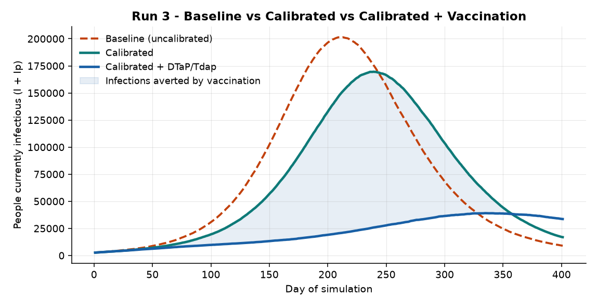
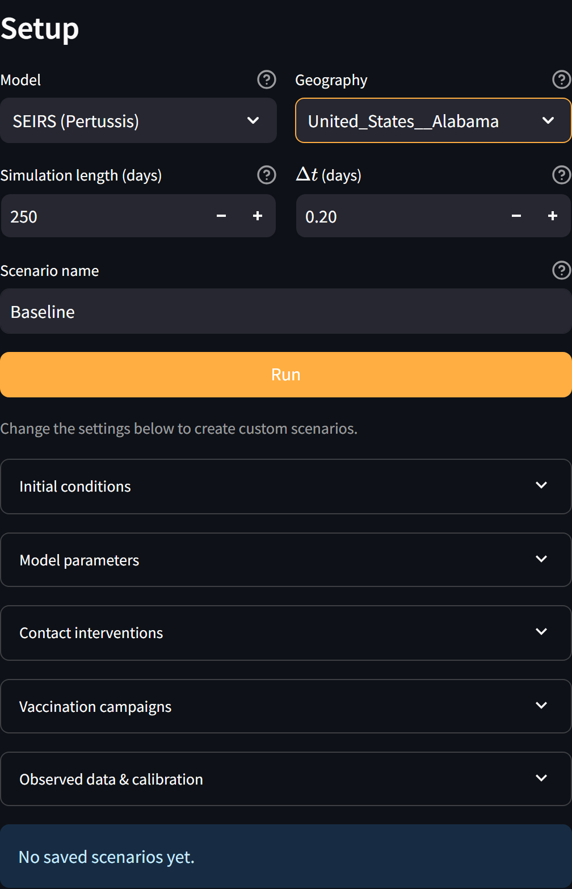
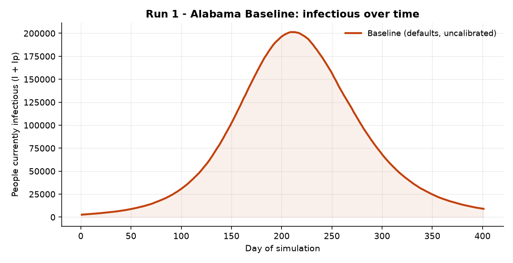
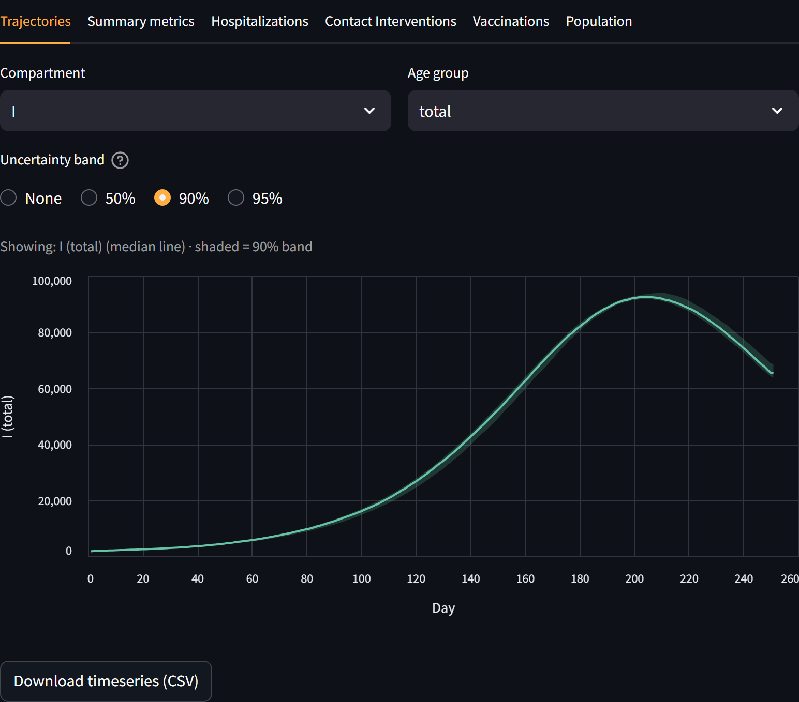
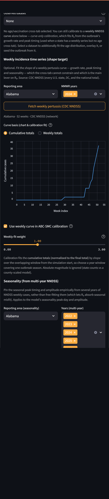
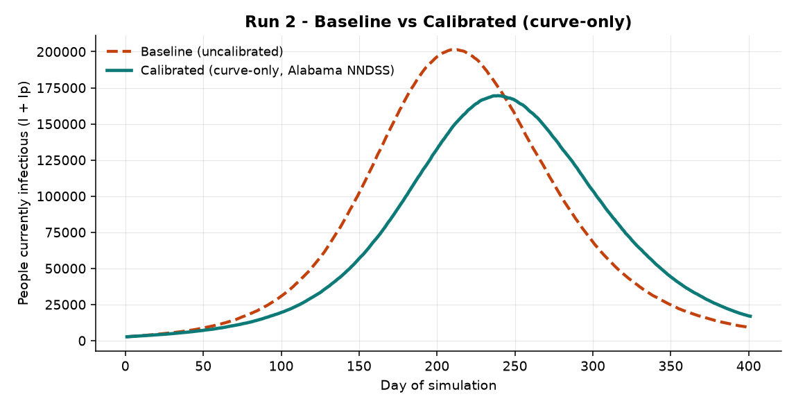
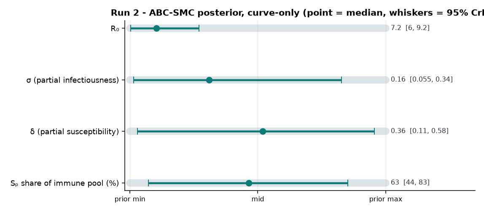
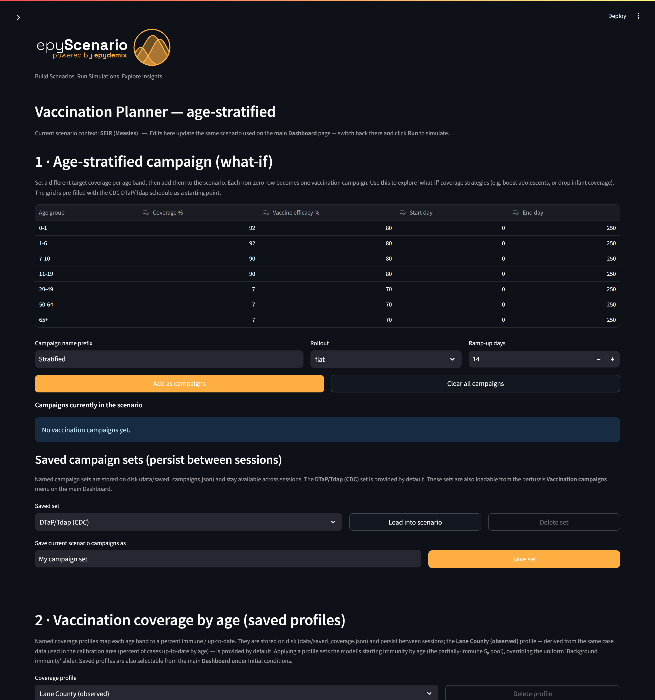

EpyScenario · SOAR / IRS
An end-to-end worked example using a state with no local age cross-tab. Follow one Alabama scenario through three runs and you will have used EpyScenario's curve-only calibration path — the workflow for anywhere you have a weekly NNDSS series but no age-by-vaccination breakdown.
A public-health analyst comfortable with surveillance data but new to simulation modeling. Every modeling idea is explained on first use. Because Alabama has no age cross-tab available, calibration uses the weekly case curve alone — the curve-only path. See the Glossary if a term is unfamiliar.
The running example: pertussis (whooping cough) in Alabama (statewide, modeled population ≈ 5,108,468), calibrated to Alabama's CDC NNDSS weekly case curve. Because no local age line-list is available, calibration uses the weekly curve alone — the curve-only path.
| Run | What you do | What you learn |
|---|---|---|
| 1 · Baseline | Run with defaults, no tuning | Setup and a first run; what uncalibrated means |
| 2 · Calibrated (curve-only) | Fit to the Alabama NNDSS weekly curve alone with ABC-SMC | How to anchor R₀ to real timing when you have no age data — and what stays uncertain |
| 3 · + Vaccination | Add the CDC DTaP/Tdap schedule | How an immunization program changes the outlook |

EpyScenario is a compartmental simulator: it divides the population into groups (susceptible, exposed, infectious, recovered) and moves people between them over time. Pertussis uses two parallel tracks (fully susceptible and partially-immune); the compartmental-model diagram shows the full structure. You do not need the math to use the tool.
http://localhost:8501.
Goal: a first curve with no tuning, and a clear sense of what it does and does not mean.


This curve uses generic literature values, not anything specific to Alabama. Treat it as "pertussis in the abstract," not a forecast — Run 2 anchors it.
Goal: anchor the model to Alabama using the only observed data available — the weekly case curve. This is curve-only calibration: ABC-SMC fits the shape and timing of the weekly curve, which is the main lever on R₀.
With only a weekly curve (no age cross-tab), ABC-SMC constrains R₀ well — the growth rate and peak timing determine transmissibility. But σ (partial infectiousness), δ (partial susceptibility) and the Sₚ share are not informed by a weekly curve, so their posteriors stay near the prior. That is the honest trade-off of having no age data: you get transmissibility, not the immunity split.
You did not select any observed dataset — the weekly curve and ABC-SMC controls appear on their own, and calibration runs against the weekly curve alone. That is exactly how you calibrate any state that has an NNDSS series but no age line-list.


ABC-SMC reports a median and 95% credible interval (CrI) per parameter. Watch how much narrower than the grey prior bar each interval is — that is how much the Alabama data constrained it.

| Parameter | Calibrated median | 95% credible interval | Constrained by weekly curve? |
|---|---|---|---|
| R₀ | 7.2 | 6 – 9.2 | Yes — main lever |
| σ (partial infectiousness) | 0.16 | 0.055 – 0.34 | No — near prior |
| δ (partial susceptibility) | 0.36 | 0.11 – 0.58 | No — near prior |
| Sₚ share of immune pool (%) | 63% | 44% – 83% | No — near prior |
Alabama reported only ~37 pertussis cases in 2024, and pertussis is heavily under-reported everywhere. Calibration fits the curve's shape, not its absolute height, and a sparse curve constrains R₀ more loosely than a high-incidence state would. Read the R₀ interval accordingly.
Goal: keep the curve-only calibrated model and add a realistic immunization program.
DTaP/Tdap is not sterilizing and its protection wanes, so vaccinating someone moves them from fully susceptible (S) into the partially-immune track (Sₚ) — less likely to be infected, less infectious if they are — rather than removing them entirely.

| Term | Plain-English meaning |
|---|---|
| Compartment | A group the population is divided into (e.g. Infectious); people move between them over time. |
| SEIRS | Susceptible → Exposed → Infectious → Recovered → back to Susceptible as immunity wanes. |
| Curve-only calibration | Fitting the model to a weekly case curve alone (no age breakdown). Constrains R₀ but not the immunity parameters. |
| R₀ | Basic reproduction number — average people one case infects in a fully susceptible population; the main driver of outbreak speed. |
| ABC-SMC | The Bayesian calibration method used here; returns a range (posterior) per parameter, not a single value. |
| Posterior / 95% CrI | The parameter values consistent with the data; the 95% credible interval is where the truth most plausibly lies. |
| NNDSS | CDC's National Notifiable Diseases Surveillance System — the weekly case source. |
| Symptom | Fix |
|---|---|
| ABC-SMC button warns it needs a weekly curve | In curve-only mode you must fetch a weekly series and tick “Use weekly curve in ABC-SMC calibration” first (there is no age dataset to fall back on). |
| “Fetch weekly” returns nothing | The app falls back to a local cache; if a year is empty, pick another MMWR year. |
| R₀ interval is very wide | Expected for a sparse, low-count state; try the cumulative basis, a longer horizon, or additional MMWR years for a fuller curve. |
| Empty result chart | Click Run on the Dashboard after calibrating or editing the vaccination plan. |